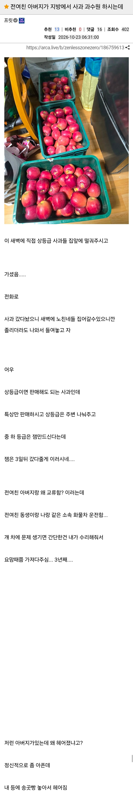

아니 시발 결말

아니 시발 결말


이집 드리프트 맛깔나네 ㅋㅋㅋㅋㅋ
송곳빵은 보법이 다르네
동생이랑 같은화물차 소속인것도 있겟지만 전여친 정병 케어해주고 계속 곁에잇어줄 사위감으로 점찍어놧는데 헤어져서 아쉬워서 그런거임
이게마따
합의금을 사과로 갚고 계시구만
갖갖
와 나는 전여친 현와이프 엔딩인줄
송곳빵 ㄷㄷ
팔다리도 아니고 등에 송곳은 진짜 위험한데 ㄷㄷ
진짜 칼잡이는 가슴보다는 뒤에서 폐를 노린다.
폐를 찔린 놈은 소리도 못 지르거든!
오 귀검사 직업뭐임
유오성 대사 모름?
모르는데요?ㅎㅎ
영화 친구에서 유오성이 치는대사임
ㅋㅋㅋㅋㅋㅋㅋㅋ 송곳빵은 뭐야
ㅋㅋㅋㅋㅋㅋㅋㅋㅋ 어캐살았냐
이야 상얀데레....쉽지않네...
전여친 동생이 우울증이 있었는데 걔 남친이 젊은 나이에 사업 성공해서 돈도많고 동생의 동생도 취업시켜주고 그랬는데
걔 우울증때문에 본인 헤어지고 동생도 실직하고 언니도 헤어지고 엄마도 결국 케어 포기해서 가정 파탄나고 무튼 개작살이남
남친이 차도 두대나 사줬는데 그거 다 전봇대랑 가로수 들이박아서 폐차시키고 병 도지면 엄마도 안되고 전여친인 언니만 찾는데 부르든 전화로든 몇시간을 울면서 감정을 쏟아내니까 언니도 결국 무너지고 진짜 모든게 진짜 다 개박살이남
데이트하다 전화받으면 이미 울고있는데 점점 악을쓰면서 울기 시작하고 그걸 서너시간을함
약을 먹으면 괜찮아지는데 그걸 약을 안먹더라 ㅋㅋ
왜 안먹을까 약을...
몇가지 이유가 있는데,
우울증 환자가 약을 먹으면 어쨌든 호르몬 변화가 생기고 기분이 바뀜 그게 치료 기전이기도 하니까 근데 그게 싫어서 안먹는 사람
두번째는 내가 환자라고 인정하기 싫어서 안먹는 사람
세번째는 걍 귀찮거나 까먹고 안먹는 사람 우울증 증상중 제일 흔한게 건망증이랑 게으름증임ㅋㅋ
부작용 문제랑 더불어 외부의 힘으로 정신병을 다스리는 상황 자체에 거부감을 느끼는 사람이 많음
'약에 의존해서 제정신을 유지해야한다니 자괴감든다' 이런거
이게 정신과 특성상 병과 사람의 경계가 다른 분야보다 희미해서
정신과 의사들조차도 환자를 상대하면서 건조하게 병증으로만 대할 수 없고 환자한테 답답함과 짜증을 느낄 정도니
환자들은 더하지
합의금이였네 ㄷㄷ
홍옥사과네 ㅋㅋㅋ
미안하고 고마워서 챙겨주시는건가보네
등에도 숨구멍이 있어야
송곳빵은 쉽지않네;
ㅋㅋㅋ 사과할겸 사과주시는거네
송곳빵은 예수가 당한 거 아니냐...ㄷㄷㄷ
깽값 할부네..
어우 송곳빵 ㄷㄷ
아니 ㅅㅂ ㅋㅋㅋㅋㅋ
나도 전여친 현와이프인줄 알았더니 ㅋㅋㅋㅋㅋ
3년째 피해보상 중이시네 ㅋㅋㅋㅋㅋㅋ
아니 등에 송곳은 십
정신병은 참 힘들지
정신질환은 쉽지 않다
무슨빵인진 모르겠는데 얼마나 맛있는 빵이었길래
와 아무리 송곳이라도 길어서 크게 다칠 거 같은데
뒤에서 목이나 머리에꼽으면 죽어요..확실하게 죽습니다..
얼음송곳이면 샤론 스톤인데?
송곳빵은 뭔데 ㅁㅊ
아니 송곳빵은;;
ㄷㄷ.
왜 결혼 엔딩이
아니고
그건 깽값이었구요
와 폐라도 뚫렸으면 ㅅㅂ;
주먹정도면 용서해도 송곳은 좀 무섭지 많이

현실 멘헤라 얀데레가 이렇게 무섭구나